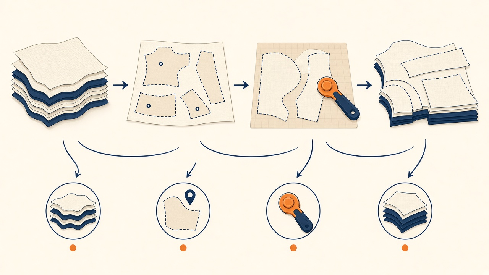
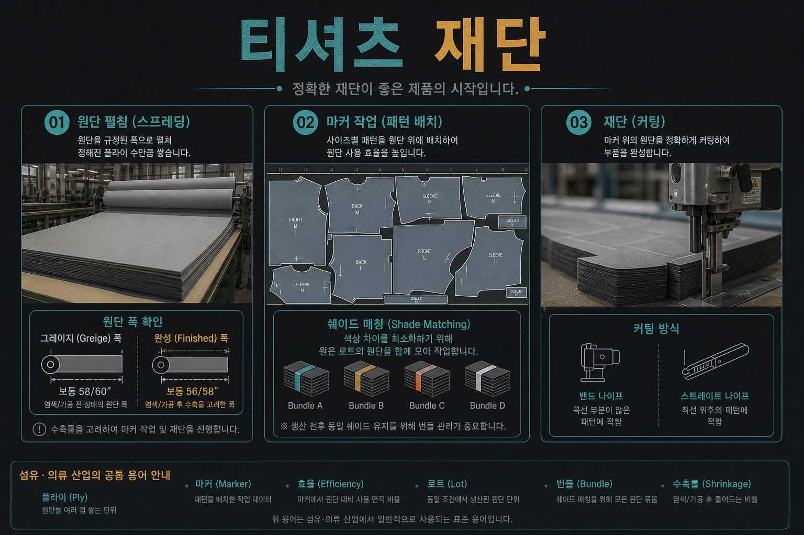

교육자료 · 재단
원단을 쌓고, 재단 도면 맞춰 자르는 칸. 색 그룹(셰이드)을 한 장에 섞지 말 것. 연단·마커·커팅은 아래에서.


쉬운 말: 롤을 겹겹이 까는 것. 겹 수는 작지.
현장: 연단 · 이름: spreading · ply
쉬운 말: 패턴을 빈트없이 배치한 도면. 효율%·폭 숫자는 이 페이지 공장치 아님.
현장: 마커 · 이름: marker
쉬운 말: 도면 따라 부품 절단. 기종은 설비·작지.
현장: 커팅 · 이름: cutting
연단→마커→커팅은 공개 apparel 커팅 흐름. 폭·플라이·효율%·보유 기종은 스펙·현장에 따른다. 공장 숫자로 끝내지 않는다.
셰이드 그룹을 한 가먼트에 섞지 말 것. 출처: 공개 shade band 실무(Textile Blog / Runtang류).
롤마다 스와치를 떠 비교한다. 롯·염룩 단위.
D65 등 표준광 아래서 색차 판단(공개 shade band 실무).
A/B/C 그룹으로 나눔. 레이·번들은 그룹을 섞지 않음.
4점 합격 롤도 서로 색이 다르면 한 장에 붙이면 패치워크.
원단검사 4점과 셰이드는 다른 축. 검사 합격이어도 색 그룹이 다르면 한 장에 섞지 않는다.
번들 = 같은 셰이드 그룹의 부품들.
같은 사이즈 부품을 함께 묶는다.
재단 후 번들을 봉제 라인으로 넘긴다.
번들 규칙·태그 수는 현장마다 다름. 공장 번들 규칙은 작지·QC를 본다.
쉬운 말 먼저, 현장말·교육말은 같이. 작지·재단 지시 = 현장말.
| 현장말 | 교육말 | 메모 | 어디 |
|---|---|---|---|
| 연단 | spreading | 플라이 쌓기. face-up/face-to-face는 작지. | 재단 시작 |
| 마커 | marker | 패턴 네스팅. 효율=패턴/마커 면적. | 커팅 전 |
| 재단 | cutting | straight/band/자동커터 공개 종류. | 부품 절단 |
| 번들 | bundle | 같은 셰이드·같은 사이즈. | 봉제 전달 |
| 음영/셰이드 | shade | A/B/C 그룹. 한 가먼트에 섞지 말 것. | 색 관리 |
| 플라이 | ply | 원단 겹 단위. 수는 작지. | 연단 |
공장 효율%·플라이 수·보유 재단기는 이 페이지로 정하지 않는다.
교육용 영상은 이 페이지에 아직 없다.
이 페이지 숫자로 공장 규격을 정하지 않는다. 작지·바이어 스펙을 본다.
연단(spreading)·마커(marker)·커팅.
효율 = 패턴면적/마커면적. 공장 %는 이 페이지로 정하지 않는다.
그룹이 다르면 한 장에서 패치워크.
같은 셰이드·같은 사이즈 부품. 봉제 라인으로.
플라이 = 원단 겹. 수는 작지.
캡션: 그림 폭 숫자는 단순 예시일 수 있음. 스펙 시트. 공장 효율이 아니다.
오버록은 봉제 본선. 커팅은 straight/band/자동커터.
검사 합격과 셰이드는 다른 축. 색 다르면 섞지 않음.
연단 방식은 원단·작지에 따른다.